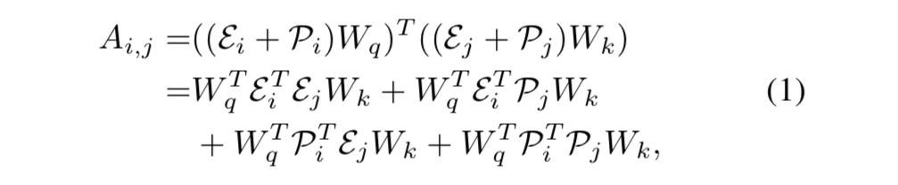
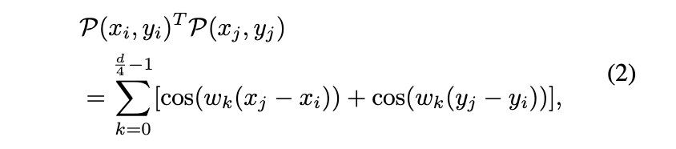
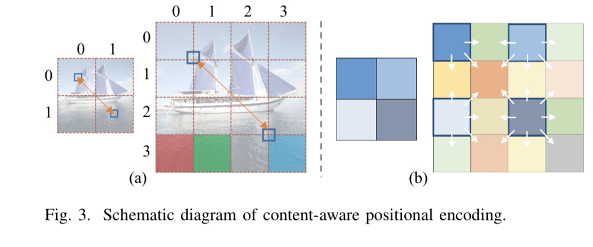
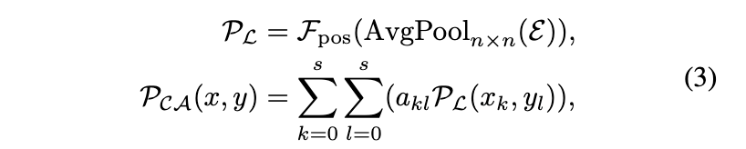
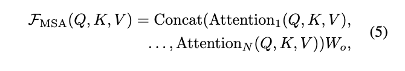
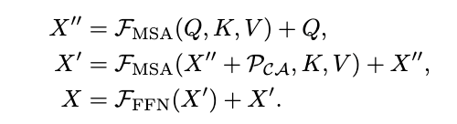
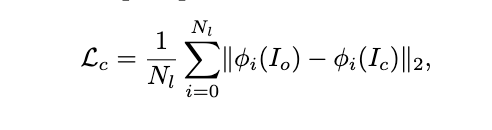
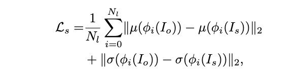
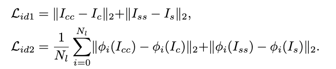
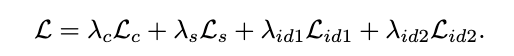

StyTR2
Abstract
风格转换的目标是在保持原有内容的同时，在风格参照的指导下呈现出具有艺术特征的图像
由于卷积神经网络（CNN）的局部性，很难提取和维护输入图像的全局信息。
因此，传统的神经风格转换方法面临着有偏见的内容表示
为了解决这个关键问题，我们提出了一种基于转换器的方法，称为StyTr2 > 将输入图像的长期依赖性考虑到图像样式传输中
与其他视觉任务的视觉转换器不同 StyTr2包含两个不同的转换器编码器，分别为内容和样式生成特定于域的序列 在编码器之后 采用多层转换器解码器根据样式序列对内容序列进行样式化
我们还分析了现有位置编码方法的不足，提出了内容感知位置编码（CAPE） > 它具有尺度不变性，更适合于图像样式传输任务
定性和定量实验表明，与最先进的基于CNN和基于流的方法相比，所提出的StyTr2是有效的。
代码和模型可在https://github.com/diyiiyiii/StyTR-2
1.Introduce
此处省略一些内容 详细可查看原论文
总之，我们的主要贡献包括 - 一个名为StyTr2的基于转换器的风格转换框架，以生成风格化结果，并保留输入内容图像的结构和细节 - 一种基于内容的位置编码方案，具有尺度不变性，适用于样式转换任务 - 综合实验表明，StyTr2形成了基线方法，并以理想的内容结构和风格模式取得了显著的效果
2.Relate Work
- 图像风格迁移
- 视觉任务的transformer > 在本文中，我们介绍了用于样式转换任务的基于变换器的结构，可以将其视为图像块的序列到序列生成
- 位置编码 > 在本文中，我们提出了一种基于内容的位置编码机制，该机制具有尺度不变性，更适合于图像生成任务
3.Method
为了利用transformers的功能捕获图像特征的长距离依赖性以进行样式转换
我们将该问题描述为一个连续的补丁生成任务
给定一个内容图像image (H,W,3) 并显示一个样式图像style (H,W,3)
我们将两幅图像分割成块patch（类似于NLP任务中的标记）
使用线性投影层将输入块投影到型如L×dim中嵌入 \(\varepsilon\) 的序列特征中
\[ L = \frac{H\times W}{m\times m} \]
L是特征序列的长度
m=8是patches的size
dim是特征序列的维度
3.1Content-Aware Positional Encoding（CAPE）
当使用transformer-based的模型时，位置编码（PE）应包含在输入序列中，以获取结构信息
第i个patch和第j个patch的注意力得分计算如下：
 > Wq 用于查询的参数矩阵 > Wk用于密钥计算的参数矩阵 > Pi 第i个一维的PE
在二维情况下两个像素点(xi,yi) (xj,yj)之间的位置相对关系:

- \(w_{k} = \frac{1}{1000^{(\frac{2k}{128})}}\)
- d = 512
两个patch之间的位置相对关系仅取决于它们的空间距离
因此，我们提出两个问题:
第一
对于图像生成任务，在计算PE时是否应该考虑图像语义？
传统的PE是为按逻辑排列的句子设计的，但图像补丁是根据内容组织的。
我们将两个patch之间的距离表示为d( · , · )

在图3(a)的右侧
d((x0,y3),(x1,y3))(红色和绿色补丁) 和 d((x0,y3),(x3,y3))(红色和青色补丁)之间的差异应该很小
因为我们预计类似的内容patch会有类似的样式化结果
第二
当输入图像的大小呈指数增长时 传统的正弦位置编码是否仍然适用于视觉任务？
如图3(a)所示
调整图像大小时 相同位置的面片（用蓝色小矩形表示）之间的相对距离可能会发生显著变化
这可能不适用于视觉任务中的多尺度方法
为此，我们提出了内容感知位置编码（CAPE）
它是尺度不变的，更适合风格迁移任务
与仅考虑补丁相对距离的正弦 PE 不同，CAPE 以图像内容的语义为条件
我们假设使用 n × n 位置编码足以表示图像的语义
对于图像 \(I \in \mathbb{R}^{H \times W \times 3}\) , 我们将固定的 n × n 位置编码重新缩放为\(\frac{H}{m} \times \frac{H}{m}\) ，如图 3(b) 所示
这样，各种图像尺度就不会影响两个补丁之间的空间关系
补丁 (x, y) 的 CAPE 即PCA(x, y)被表述为

- \(AvgPool_{n\times n}\) 是平均池化函数
- \(\mathcal{F}_{pos}\) 是 1 × 1 卷积运算，用作可学习的位置编码函数
- \(\mathcal{P}_{\mathcal{L}}\) 是遵循序列\(\varepsilon\)的可学习PE
- 在我们的实验中n 设置为 18
- $a_{kl} $是插值权重，s 是相邻块的数量
- 最后，我们将 \(P_{CA_{i}}\) 添加到 \(\varepsilon_{i}\)，作为第 i 个补丁在像素位置 (x, y) 的最终特征嵌入
3.2 Style Transfer Transformer
3.2.1 Transformer 编码器
我们通过使用基于 Transformer 的结构来学习 顺序视觉表示 来 捕获图像块的长期依赖关系
与其他视觉任务不同，tjr风格迁移任务的输入来自两个不同的领域，分别对应于自然图像和艺术绘画
因此，StyTr2 有两个转换器编码器来编码特定领域的特征，用于在下一阶段将序列从一个域转换到另一个域
给定输入内容序列 \(Z_c = \{ \varepsilon_{ci} + \mathcal{P_{CA}}_i\}\) 的嵌入
我们首先将其输入到转换器编码器中
编码器的每一层都由一个多头自注意力模块（MSA）和一个前馈网络（FFN）组成
输入序列被编码为查询（Q）、键（K）和值（V）： \[ Q =Z_cW_q , K=Z_cW_k , V=Z_cW_v \]
- \(W_q , W_k , W_v \in \mathbb{R}^{C \times d_{head}}\)
multi-head Attention的计算方式

- \(W_0 \in \mathbb{R}^{C \times C}\)是可学习的参数
- N 是注意力头的数量，并且 \(d_{head} = \frac{C}{N}\)
应用残差连接来获得编码的内容序列 Yc
- FFN是激活函数为relu的MLP
- LN被应用到每一个块的末尾
类似地，输入样式序列 Zs = {Es1, Es2, ..., EsL} 的嵌入按照相同的计算过程编码为序列 Ys
只是不考虑位置编码，因为我们不需要维护 最终输出中的输入样式
3.2.2 Transformer 解码器
我们的转换器解码器用于根据编码样式序列 Ys 以回归方式翻译编码内容序列 Yc
与 NLP 任务中的自回归过程不同，我们一次将所有顺序补丁作为输入来预测输出
如图 3(a) 所示，每个 Transformer 解码器层包含两个 MSA 层和一个 FFN
我们的 Transformer 解码器的输入包括编码后的内容序列
即 \(\bar{Y_c}\) = {Yc1 + PCA1, Yc2 + PCA2, ..., YcL + PCAl} 以及样式序列 Ys = {Ys1, Ys2, ..., YSL}
我们使用内容序列生成查询 Q，并使用样式序列生成键 K 和值 V
\[ Q =\bar{Y_c}W_q , K=Y_sW_k , V=Y_sW_v \]
然后，transformer解码器的输出序列X可以计算为

3.2.3 CNN解码器
Transformer 的输出序列 X 的形状为 【HW/64 , C】
我们没有直接对输出序列进行上采样来构造最终结果
而是使用三层 CNN 解码器来细化 Transformer 解码器的输出
对于每一层，我们通过采用包括 3 × 3 Conv + ReLU + 2 × Upsample 在内的一系列操作来扩大规模
最后，我们可以得到分辨率为 H × W × 3 的最终结果
3.3 Network Optimization
生成的结果应保持原始内容结构和参考样式模式
因此，我们构造了两个不同的感知损失项来衡量
输出图像 Io 和输入内容图像 Ic 之间的内容差异
Io 和输入风格参考 Is 之间的风格差异
我们使用由预训练的 VGG 模型提取的特征图来构建之后的内容损失和样式损失
内容感知损失 Lc 定义为

- 其中\(\phi_i()\) 表示从预训练 VGG19 中的第 i 层提取的特征，\(N_l\) 是层数。
风格感知损失 Ls 定义为

- 其中 μ(·) 和 σ(·) 分别表示提取特征的均值和方差。
我们还采用身份损失来学习更丰富、更准确的内容和风格表示
具体来说，我们将两个相同的内容（风格）图像放入 StyTr2，生成的输出 Icc(Iss) 应该与输入 Ic(Is) 相同
因此，我们计算两个身份损失项来衡量 Ic(Is) 和 Icc(Iss) 之间的差异：

通过最小化以下函数来优化整个网络：

我们将 λc、λs、λid1 和 λid2 设置为 10、7、50 和 1，以减轻幅度差异的影响